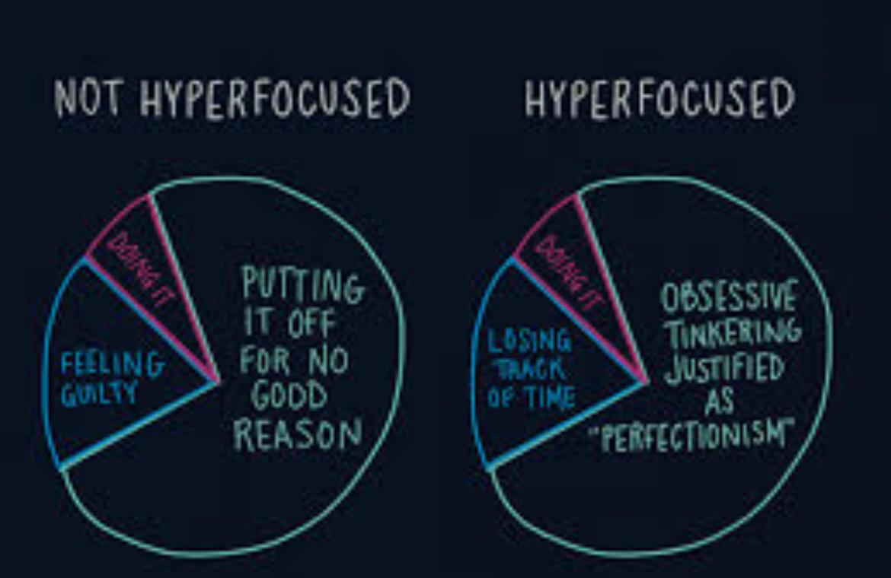

Have you ever been so deeply absorbed in a task that hours slipped by unnoticed?
This mental “tunnel vision,” where the outside world fades and only one goal remains, is a powerful cognitive phenomenon — often rooted in the prefrontal cortex. Let’s dive into the world of prefrontal hyperfocus.
🧠 What Is Prefrontal Hyperfocus?
Prefrontal hyperfocus is a state where the prefrontal cortex — the brain’s center for executive function — becomes intensely activated around a single task or thought. This region governs decision-making, attention, memory, and goal-directed behavior.
During hyperfocus, attention narrows dramatically, filtering out distractions. This can boost productivity — or lead to unhealthy obsession.
🔬 The Neuroscience Behind It
The prefrontal cortex acts like a spotlight in the brain, directing mental energy.
In hyperfocus:
- Dopamine spikes, especially in neurodivergent brains (ADHD, ASD, OCD).
- Cognitive filtering narrows, blocking irrelevant stimuli.
- Time perception gets distorted — hours feel like minutes.
It’s not just “focus.” It’s focus on overdrive.
⚙️ Who Experiences Hyperfocus?
- People with ADHD, ASD, OCD
- Artists, coders, creators
- Entrepreneurs & athletes in “flow state” or peak performance
Ironically, those with ADHD often alternate between distraction and hyperfocus — a misunderstood paradox.
⚖️ Benefits vs. Downsides
 ✅ Benefits:- Deep work, innovation, learning
- High creativity and performance
- Neglect of basic needs (eating, sleeping)
- Social withdrawal
- Obsession and burnout
- Tunnel vision — losing perspective or ignoring better alternatives
🧘♂️ How to Manage Prefrontal Hyperfocus
- Be Aware: Use alarms/check-ins to break loops.
- Balance stimulation/dopamine: Limit overstimulation (gaming, bingeing).
- Channel it consciously: Focus on what matters — not just what’s compulsive.
- Ground yourself: Mindfulness or movement helps regulate attention.
🧩 Is Hyperfocus a Superpower?
That depends on how it’s used. In the right context, hyperfocus can fuel brilliance. But without boundaries, it can become a trap. The potential lies not to eliminate it — rather to understand and harness it.
Food for your Thoughts 💭
Prefrontal hyperfocus is a unique blend of brain chemistry and attention. It’s not just a quirk — it’s a phenomenon that affects how we create, learn, and live.
“With great power comes great responsibility.” Set healthy boundaries, stay self-aware, and use your hyperfocus to build — not break.
Hyperfocus is not a flaw — it’s a force.
Without limits, it can burn you out.
Set healthy boundaries.
Be aware and grounded.
Harness it with wisdom.
Make it your superpower.
- Shiv